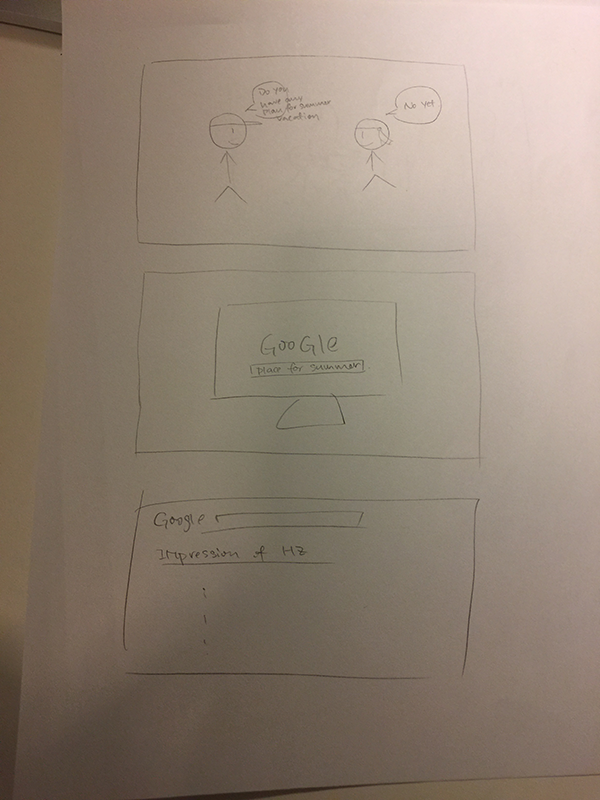
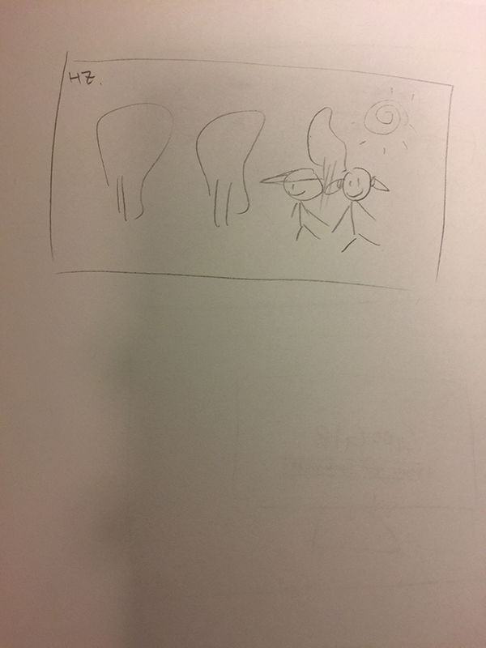
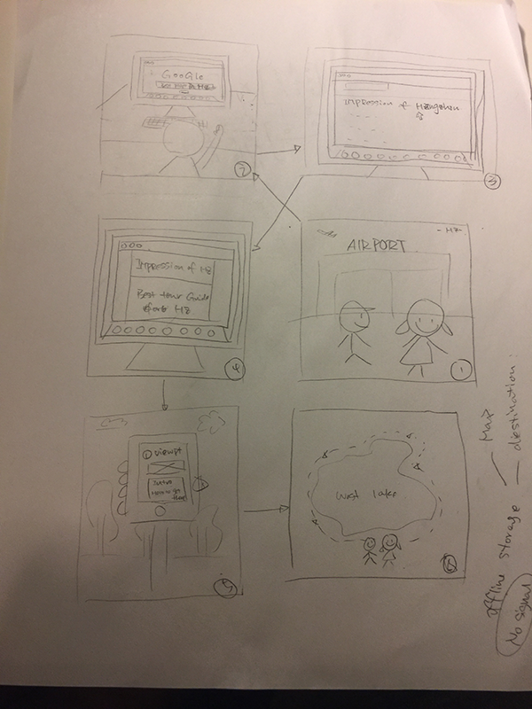

· Impression of Hangzhou ·
Storyboard 1
 Storyboard 2
From the first sketch, the audience was not clear about what the story is talking about; therefore, I have imporved it for the second one. The user was able to understand the storyboard clearly. Base on the storyboard, they could find out what they can learn from it. I also go some great ideas such as load the offline map for user which allows user to check out the location more conveniently.